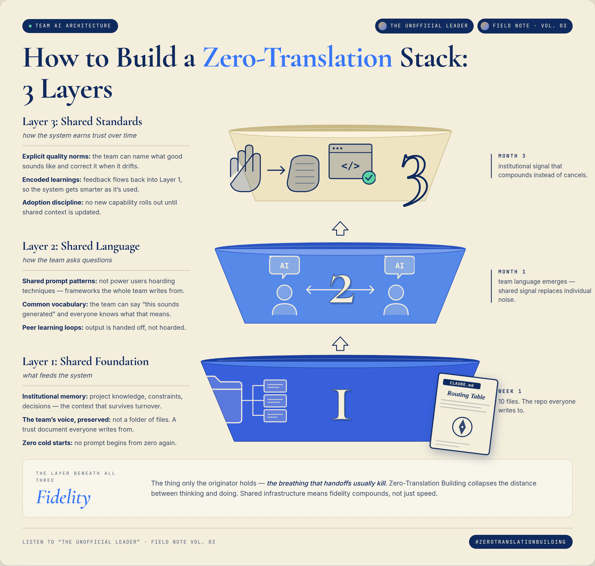

Stop me if you have seen this happen lately. The team has the right idea. The roadmap is clean. Everyone in the room nods. Then the idea has to survive a translation layer, into a ticket, into a sprint, into someone else's hands, and what ships looks nothing like what was named in the room.
I have spent most of my career watching that gap. Sometimes it shows up as the distance between what a customer signals and what a team finally hears. Sometimes as the distance between the org chart and the people who actually move work. Sometimes as the distance between thinking and making. AI is collapsing the last one. I write the prompts, ship the code, and own the outcome. That collapse has a name in my writing, Zero-Translation Building, and once you start working inside it the old assumption that ideas have to be translated to be built starts to feel like a cost you no longer have to pay.
Most people frame AI ROI as finding the one big thing that saves 20 hours. That is not the shift. The shift is small recoveries that compound. 10 minutes here. 45 minutes there. An hour somewhere else. I shared some AI workflows with our internal 20-PM org, all of us serving the same customer base. The feedback was not "great prompts." It was "this is going to save so much time." That is the measure. Not the cleverness of the mechanism. The hour they get back. And what matters is not the time saved. It is what you do with it. You recapture time from low-leverage work so you can apply it to the deeper work that actually moves things. None of this releases if you only add AI on top of what you were already doing. The value comes when you stop doing the old thing.
It is what you do with it.Everyone is worried that AI is flattening the curve because everyone has access to the same tools. The premise is right. The conclusion is wrong. The moat is you: your ethics, your thoughts, your approach, your values, your position. No one can replace you.
It is no different from photography or real estate. Hand the same camera to a thousand photographers and you get a thousand different photographs. Hand the same listing to a thousand realtors and you get a thousand different sale prices. The tool is not the differentiator. The person using it is.
It does not matter what the industry is. The pattern is always the same, and AI will never change it. Who is the human making the decisions?
For as long as humans are the digester and the consumer, the human directing and forming the product remains the moat. You are one of one. There is no other you.
I have done that work in places where getting it wrong is not an option. Compliance-grade financial services first, then a $250M ARR HCM platform. Inside both, I built like a founder. When my team needed an AI capability platform, I did not wait for someone to fund it; I built one from scratch with Claude Code and agentic workflows, and internal teams are using it now. Operator rigor and founder instinct are not a contradiction. The first earns you the right to do the second.
What I am drawn to underneath all of this is the same instinct from different angles. The trust layer beneath a migration. The influence layer beneath an org chart. The adoption layer beneath a tool rollout. The system beneath the visible system. The work I want to keep doing is to build the kind of infrastructure that makes people more visible, more capable, and more confident, the kind that does not show up in a process diagram and decides everything anyway. Leadership in those systems has rarely waited for the title for me. It started in small moments, the kind no one notices until suddenly everyone does.
Leadership doesn't start with a job title.I am writing this thesis for other unofficial leaders as much as for myself. Do not be worried that AI is flattening the curve. Do not be worried that AI is coming for your job. No model can replicate you. You are unrepeatable.
What I am looking for now is a senior seat where the hidden systems get to be the work.
That level is where servant leadership and player/coach instincts push AI adoption sideways, across teams, functions, and orgs.
The moat in published form.
Every essay, every podcast episode, every Field Note is a record of how I think, in language no model can replicate.
The Unofficial Leader is where Zero-Translation Building, the Network Intelligence Layer, and the gap between when a signal is detected and when the right person finally acts on it all started. The writing is not a side activity. It is the proof.
Field Note Vol. 03, opposite, is the same thinking made visual. Most AI rollouts stall in Layer 2 because Layer 1 was never built, and a new capability cannot survive on top of a missing foundation.
The original Zero-Translation Building piece. AI is collapsing the distance between what you can think and what you can make.
The Network Intelligence Layer, the relational operating system beneath the org chart, and what becomes catastrophically visible when a RIF takes it apart.
Listening got easy. Routing what you heard to the right person in time is the actual problem.
A call to help clear the runway, not just cheer it.

Built where getting it wrong was not an option.
Compliance-grade enterprise as the proving ground. Founder instinct inside it.
Configuration data migration from ProTime to ProWFM used to take weeks: a ticket queue, an engineer to run the queries, output structuring, a customer review session, and manual mapping adjustments. I compressed all of that into a single run by building a functional prototype myself with Claude Code and agentic workflows, on top of existing product components so engineering did not have to start from scratch. The architect's line after the walkthrough was "you guys don't even need me anymore." Engineering shipped against the prototype and the Claude-generated stories. Internal services runs the extractions in it now and sits with customers to review the output.
I owned a five-panel observability platform that gave engineering, product, and CX leaders the portfolio view they did not have before. Customer status had been living in the heads of services consultants and scattered across Salesforce and Jira queues. Nobody could answer "how many of our 300 enterprise customers are at risk in their migrations right now" without weeks of digging. The platform filtered support-Jira noise down to true defects, weighted them by ARR at risk and customer sentiment pulled from Salesforce, and tracked time-to-resolve across both the upgrade and migration programs. $250M in ARR was in flight across those programs at any given time. The dashboards guided engineering team focus and targeted customer success outreach. I partnered with account management to join calls with red-sentiment, high-ARR customers personally, and assuaged concerns across multiple accounts that had history with rough past upgrades and tension elsewhere in the business. The frame I was building toward was TTRE, Time to Right Expert. Routing latency is the problem, not resolution time. AI in CS plays as intelligent routing and parallel triage, not as faster ticket-typing.
Compliance-grade financial services. My last stretch was driving customer adoption and onboarding for the new omni-channel communications product. The customers were legacy financial services firms, annuities and the like, with end-customer bases that skew older. The product pushed SMS and RCS as the delivery channel for regulated documents like statements and confirms, the kind of paper-by-default workflow nobody in that demographic had ever opted into. Adoption in that environment is not a feature flag. It is a trust transfer. Before that I led 40-plus enterprise client deployments and served as the internal SME on the platform across the full client base.
Shipping in public.
Three current builds. The differentiator is always the person at the keyboard.
Network Intelligence Layer
An interactive Network Intelligence Layer over Lenny Rachitsky's archive.
Everyone in the buildathon got the same dataset, so my differentiator could not be the data. The obvious move was to ask Claude for a novel idea on top of the corpus, which is exactly what would generate the same ideas everyone else got. I went a step deeper. I gave Claude the corpus, my Substack archive, and my positioning, and asked it to find an angle that was mine to ship and no one else's, regardless of how good anyone else got with the tools.
What came out was the Network Intelligence Layer applied to Lenny's own archive. A graph of the corpus, plus three surfaces over it: Atlas, an interactive map; Lookup, where you paste a product situation and the model returns two contrasting reads and a draft move; Briefing, where you paste an external artifact like a CPO talk or job description and the model returns priorities, agreements and pushbacks grounded in the corpus. The named concept on this page, made real.
Cold Open
A warm-path job search tool for senior PMs.
Most job search tools are generic. Same postings, same application flow, same output for everyone. Cold Open inverts that. You do not need hundreds of applications. You need to find the one, the role where the right person already knows your work. You start by writing what you bring to an organization, in your own voice. The tool reads who has engaged with that voice across LinkedIn and Substack and lines them up against the open roles you are targeting. The more personal context you bring, your impact statement, your social graph, your published thinking, the more the tool tailors itself to you. Your context is the competitive advantage. It compounds. Someone else using Cold Open gets a completely different experience because they are a different person.
You are the moat.Round Two
A practice-worksheet generator for math teachers.
My wife teaches math. She was rebuilding worksheets by hand for students who needed a second pass at problem types they had missed, and at some point I started doing it for her. Round Two exists so she does not need me. Upload a test PDF and it pulls the problem types using Claude, generates five fresh practice problems per type with answers verified by SymPy so the math is actually right, and prints a worksheet with worked examples and an answer key. Zero-Translation Building in miniature: collapse a dependency, hand someone their autonomy back.
Don't be worried that AI is flattening the curve. Don't be worried that AI is coming for your job. No model can replicate you.
You are defensible. You are unrepeatable. You are one of one by design.